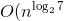
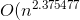
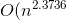
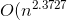

2.8 矩阵相乘
矩阵相乘
题目描述
请编程实现矩阵乘法，并考虑当矩阵规模较大时的优化方法。
分析与解法
根据wikipedia上的介绍：两个矩阵的乘法仅当第一个矩阵A的行数和另一个矩阵B的列数相等时才能定义。如A是m×n矩阵，B是n×p矩阵，它们的乘积AB是一个m×p矩阵，它的一个元素其中 1 ≤ i ≤ m, 1 ≤ j ≤ p。

值得一提的是，矩阵乘法满足结合律和分配率，但并不满足交换律，如下图所示的这个例子，两个矩阵交换相乘后，结果变了：

下面咱们来具体解决这个矩阵相乘的问题。
解法一、暴力解法
其实，通过前面的分析，我们已经很明显的看出，两个具有相同维数的矩阵相乘，其复杂度为O(n^3)，参考代码如下：
//矩阵乘法，3个for循环搞定
void MulMatrix(int** matrixA, int** matrixB, int** matrixC)
{
for(int i = 0; i < 2; ++i)
{
for(int j = 0; j < 2; ++j)
{
matrixC[i][j] = 0;
for(int k = 0; k < 2; ++k)
{
matrixC[i][j] += matrixA[i][k] * matrixB[k][j];
}
}
}
}
解法二、Strassen算法
在解法一中，我们用了3个for循环搞定矩阵乘法，但当两个矩阵的维度变得很大时，O（n^3）的时间复杂度将会变得很大，于是，我们需要找到一种更优的解法。
一般说来，当数据量一大时，我们往往会把大的数据分割成小的数据，各个分别处理。遵此思路，如果丢给我们一个很大的两个矩阵呢，是否可以考虑分治的方法循序渐进处理各个小矩阵的相乘，因为我们知道一个矩阵是可以分成更多小的矩阵的。
如下图，当给定一个两个二维矩阵A B时：

这两个矩阵A B相乘时，我们发现在相乘的过程中，有8次乘法运算，4次加法运算：

矩阵乘法的复杂度主要就是体现在相乘上，而多一两次的加法并不会让复杂度上升太多。故此，我们思考，是否可以让矩阵乘法的运算过程中乘法的运算次数减少，从而达到降低矩阵乘法的复杂度呢？答案是肯定的。
1969年，德国的一位数学家Strassen证明O(N^3)的解法并不是矩阵乘法的最优算法，他做了一系列工作使得最终的时间复杂度降低到了O(n^2.80)。
他是怎么做到的呢？还是用上文A B两个矩阵相乘的例子，他定义了7个变量：

如此，Strassen算法的流程如下：
- 两个矩阵A B相乘时，将A, B, C分成相等大小的方块矩阵：

- 可以看出C是这么得来的：

- 现在定义7个新矩阵（读者可以思考下，这7个新矩阵是如何想到的）：

- 而最后的结果矩阵C 可以通过组合上述7个新矩阵得到：

表面上看，Strassen算法仅仅比通用矩阵相乘算法好一点，因为通用矩阵相乘算法时间复杂度是，而Strassen算法复杂度只是
=O(n^{2.807})})。但随着n的变大，比如当n >> 100时，Strassen算法是比通用矩阵相乘算法变得更有效率。
如下图所示：

根据wikipedia上的介绍，后来，Coppersmith–Winograd 算法把 N* N大小的矩阵乘法的时间复杂度降低到了：})，而2010年，Andrew Stothers再度把复杂度降低到了})，一年后的2011年，Virginia Williams把复杂度最终定格为：})。